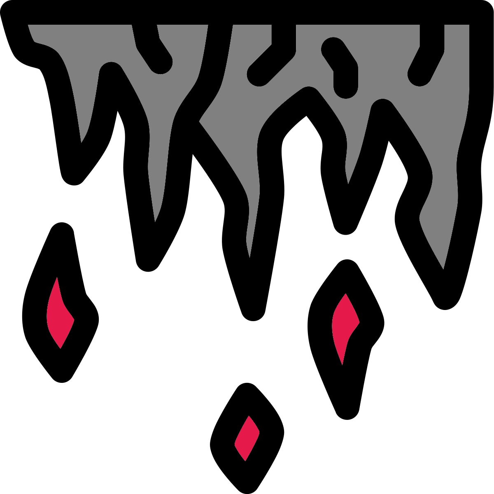

DELVE: DOT Expedition Leads to Vein Encounters

Mission
Due to an earthquake a new cave has appeared at the extinct volcano near the village Warboys, England. This cave has an entrance to the DOT and DOT raiders have recently ransacked the town.
The military are currently setting up a quarantine and building a protective wall around the cave. This takes time so they want the raider trouble taken care of at the source.
The team’s mission is to prevent further raids from occurring.
The real threat is that OBSIDIAN LAVA TALOES are currently trying to reawaken the extinct volcano. They have attacked the Raider settlement, preventing any interference.
Reward
If successful the military will reward the team with all or some of the below items and a base upgrade (based on your system).
Kukri (1D6+1 DAMAGE, MENACING, THIRSTY)
MENACING weapon tag: Enemies who see a comrade slain by this weapon have a 1-in-1D6 chance to flee.
THIRSTY weapon tag: Once this weapon is unsheathed, the weapon cannot be dropped by the user. Only once the weapon has drawn blood can it be sheathed and let go by the user.
1D6 MP5s (1D6 DAMAGE)
Westland Lynx military helicopter (16 HP, 1 ARMOR). It is a damaged prototype that will need to be repaired by the team.
Start of mission
The players will drive through Warboy to see the devastation brought upon it by the DOT raiders. They will then be brought to the ad hoc base camp set up by the military. An unfriendly lieutenant will give a brief introduction to the situation. The lieutenant will warn the team that a recon force was sent down who have not returned.
The Expedition
The players will go into the DOT to complete the mission. They can also ask the military for some gear, this will require some good rolls and/or bargaining.
The DOT
This part of the DOT looks similar to a limestone cave with stalagmites (floor), stalactites (ground), and columns. However, the rock is made of Diorite, a “salt and pepper” coloured rock. It is created from magma and found locally around Warboys due to the extinct volcano. Magma drips from the stalactites sizzling and solidifying into Diorite. Larger amounts of magma appears as the team goes deeper into the cave. Although dangerous it provides a low level of light.
Map

The Descent
The first obstacle once entering the DOT is the Descent. The raiders have put some shoddy metal steps into the steep and jagged rock surface.
Ask the players how they approach this and let the consequences happen.
Overlook Chamber
A large open chamber. A still quiet here allows the team to investigate the rock structures and decide their plan of action.
The team will notice piles of cooled magma with pieces of Obsidian. Under close inspection they are shaped like bodies with no heads. These are dead OBSIDIAN LAVA TALOES that were sniped by the TARTARUS MAGNETIC SLINGER in the Overlook window.
Overlook window
A large window high up overlooks the chamber. There is one TARTARUS MAGNETIC SLINGER and one TARTARUS RAIDER overlooking the chamber. The window connects directly to the Raider’s chamber via a tight passage.
The pair will stay hidden and silent. Whilst the Slinger keeps overlook the raider will go back and forth to relay messages between the overlook and Raider leader at the Raider’s chamber.
They will engage the team and call for reinforcements if the team try to destroy any of the cave routes.
The Squeeze
This passage is a long winding jagged squeeze. There are no enemies but characters who go through this will have to leave items behind to make the squeeze. Once in deep enough they can only go forward. Normal sized characters can only bring through one weapon, one piece of body armor, and one other piece of gear (grenade, medkit etc). They cannot bring helmets, shields, or other large rigid items.
The Relief (#relief)
A dark chamber with no magma and no light.
A trail of blood leads from the Killing Floor to a hidden alcove within a Bismuth column, this is where the METAL ORE TALOS in the Killing Floor emerged from. Within it lays a deceased member of the military recon team, riddled with heavy machine gun fire. The only usable equipment they have is a Zip line shooter.
Zip line shooter: One use per mission. Gun like device to fire a deployable 30 metre zip line. The user should be careful as titanium anchoring bolts fire out both ends to fix the zip line to a start and an end surface.
The Dome
A large chamber with a dome shaped ceiling that meets the floor. The room is littered with stalagmites, stalactites, and columns. At the very top of the dome there is an oculus made of Obsidian, a distraction.
When the majority of the team enters the centre of the chamber 2D6 hidden LITHIUM TALOES will ambush them. 1d6 are on the floor whilst the other 1D6 are on the ceiling. The Taloes are slow and will try to position themselves in good positions before unleashing their explosive spit. This may give the team a bit of time to react.
When the taloes die the resulting explosions will cause stalagmites and stalactites to fall. These will may cause 1D6 damage if not evaded.
The River
This chamber is split in half by a river of magma. Eruptions of magma regularly break the surface, dealing 1D6 damage. Jagged rocks and magma dripping from the ceiling makes the creation and use of a rope bridge very dangerous.
Anything that falls into the magma river takes 3D6 damage.
A ramp at the other side may be used during the escape if remembered.
The Killing Floor
This chamber is distinct to the rest of the cave. It has a very low ceiling, is fairly narrow, and long. It is wide enough to fit a car though. Scattered around are columns made of crystalline iridescent Bismuth. Small cracks of flowing magma line the floor providing a small amount of light.
A METAL ORE TALOS consisting of bismuth waits in the middle of the room. It stands as a silent and hidden sentry, ready to kill any intruders, the team and DOT raiders alike. It is well disguised but has one less ARMOR due to the brittleness of bismuth.
The bismuth columns can be used as 2 ARMOR cover. However, the ARMOR rating is reduced by 1 when used to negate armor as the bismuth is chipped away.
The Pillar
This room is dark and empty except for its one central feature. An intimidating hex shaped obsidian column reaches from the floor to the ceiling. Cracks line across its surface. Magma flows up these tracks from under the floor.
These have been created by the OBSIDIAN LAVA TALOES to reactivate the dormant volcano at Warboys.
The Raider’s Chamber
The Raider’s Chamber is packed with ramshackle shelters and old cars. It is in a state of major disrepair as columns of magma flow down from the ceiling. Taloes have recently attacked before they made their way to the Reservoir Chamber.
Forces
The surviving group is led by an ELDER DOTTER OF TARTARUS called Axel. Their standing force consists of 1D6 TARTARUS RAIDERS, and 2 TARTARUS MUTANTS. There are many more injured and dead.
Desperation
Every so often a new OBSIDIAN LAVA TALOS emerges from the magma to attack the settlement. The DOT raiders want to escape. Their own only choices are to leave via the surface or back deeper into the DOT. They know they will be captured if they go to the surface. The only way deeper into the DOT is through the Reservoir Chamber containing Taloes that will destroy them.
Negotation
The raiders are willing to negotiate with the team. They will not leave the chamber until there is a safe route to the DOT. Additionally, they won’t leave the surface route unguarded. They initially let the team through the Overlook Chamber unharmed so they could parley.
Axel will offer the following weapon as immediate payment if the team agrees to take care of the Taloes in the Reservoir Chamber.
Panzerschreck Rocket launcher (1D6+2 DAMAGE, LOUD)
LOUD weapon tag: Attacks with this weapon draw the undivided attention of enemies within earshot (and instantly reveal your position).
If the players try to negotiate Axel may also offer one or both of the following:
- Reinforced silver fire suit (1 ARMOR)
- Lending the players a TARTARUS MUTANT for the fight ahead
If the players agree, the raiders will pack their goods and injured into their vehicles so they are ready to escape through the Reservoir Chamber. Before the team leave Axel will inform them that the Taloes took some live recon agents and raiders, totalling 6, into the Reservoir Chamber. They also warn that once the Taloes are slain this part of the DOT will start to crumble and the team will need to be ready to retreat back to the surface. If they are not quick enough the caves will collapse and the new entrance of the DOT will disappear preventing their escape.
Mile long corridor
A mile long corridor leads from the Raider’s Chamber to the Reservoir Chamber.
The Reservoir
The chamber is a roughly circular chamber with uneven flooring and large organised pillars. In the middle there is one large hexagonal pillar of obsidian, cracks oozing with magma. Around the pillar is a mote of magma. The magma is going towards and up into the pillar.
The Volcano reawakening
6 OBSIDIAN LAVA TALOES surround the pillar performing a ritual. As the team enters they hear the screams of recon members and raiders being hurled into the magma mote. The caves start to shake as the magma flow increases in speed. Each Talos starts creating a smaller obsidian pillar at the 6 edges of the large pillar. If their ritual is not stopped the volcano will reawaken. The village of Warboy will be destroyed and England will be blanketed in a volcanic fog.
Combat
During combat the Taloes like to carry out 2 main tactics. Create cover with the abundance of lava and throw their spears whilst defended. Conversely, some will charge their enemies with arm blades.
If 6 OBSIDIAN LAVA TALOES is not enough for the challenge you would like, more can emerge from the central magam mote.
Escape
Once the Taloes have been defeated the caves will start to collapse. If the team sided with the DOT raiders they will drive through and thank them. They will pick up any Raiders who helped the team in the fight and present the team with a rusted dune buggy to escape with.
DUNE BUGGY: 8 HP, 1 ARMOR.
Whilst escaping ask for various rolls to avoid lava, falling rocks, and stalagmites in the various rooms they travel through. The Dune buggy will be able to fit through The Raider’s Chamber, The Killing Floor, The River and the Overlook Chamber.
Once they have retreated to the surface the new entrance to the DOT will collapse and the team will have successfully complete the mission.